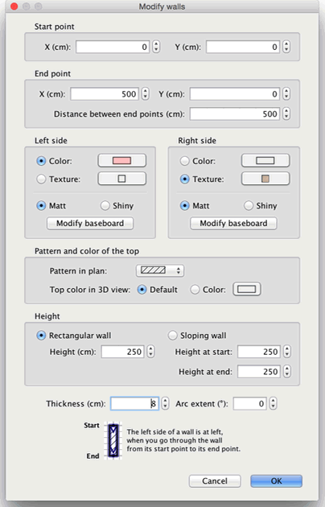

| Editing walls | |||
You may edit the location and length of home walls, either with the mouse or with Plan > Modify walls... from
the menu. When one wall is selected in the plan, you may also move its start and end point, with the size indicator that appear at each end of the selected wall.
|

|
When the mouse pointer is upon the start or end point of the selected wall, it changes to indicate
you can drag and drop that point to move it. While you press the mouse button,
a tooltip
shows the length of the wall. A wall may also be edited thanks to its pane, by double-clicking on that wall in the home plan, or by choosing Plan > Modify walls... after selecting it.  In the wall pane, you may change the coordinates of its start and end points, the colors or the textures
of its left and right sides, its thickness and its height. |
|